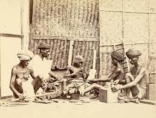

- தச்சு வேலை
- சங்க காலத்தில் தச்சுவேலை ஒரு முக்கிய வர்த்தகமாக இருந்தது, இது இப்பகுதியின் கட்டிடக்கலை மற்றும் கலை பாரம்பரியத்திற்கு பங்களித்தது. பண்டைய தென்னிந்தியாவின் இயற்பியல் மற்றும்
கலாச்சார நிலப்பரப்பை வடிவமைப்பதில் தச்சர்களின் திறமை மற்றும் கைவினைத்திறன் முக்கிய பங்கு வகித்தது.
- மீன்பிடித்தல்
- தமிழ்நாட்டின் பழங்கால மீன்பிடி என்பது வாழ்வாதாரம் மற்றும் வாழ்வாதாரத்திற்கான வழிமுறையாக மட்டுமல்லாமல்,
இப்பகுதியின் கலாச்சார பாரம்பரியம் மற்றும் பொருளாதாரத்தின் ஒருங்கிணைந்த பகுதியாகவும் இருந்தது. இந்த காலகட்டத்தில் மீனவர்கள்
பயன்படுத்திய நடைமுறைகள் மற்றும் நுட்பங்கள் வளமான மற்றும் மாறுபட்ட கடல் பாரம்பரியத்தின் வளர்ச்சிக்கு பங்களித்தன.
- முத்து சேகரித்தல்
- தமிழ்நாட்டின் பண்டைய முத்து அறுவடையானது இப்பகுதியின் பொருளாதாரம், கலாச்சாரம் மற்றும் வர்த்தகத்திற்கு பங்களிக்கும் ஒரு தனித்துவமான மற்றும் இலாபகரமான தொழிலாக இருந்தது. இந்த நடைமுறை நீண்ட வரலாற்றைக்
கொண்டுள்ளது மற்றும் தமிழ்நாட்டின் கடல்சார் பாரம்பரியத்தின் முக்கிய அம்சமாகத் தொடர்கிறது.
- கப்பல் கட்டிடம்
- தமிழ்நாட்டில் சங்க காலத்தில் கப்பல் கட்டுதல் மிகவும் முன்னேறிய மற்றும் நன்கு வளர்ந்த தொழிலாக இருந்தது. இது பிராந்தியத்தின் கடல் வர்த்தகம், கலாச்சார அடையாளம் மற்றும் பொருளாதார செழுமை ஆகியவற்றில் முக்கிய பங்கு வகித்தது. இந்த காலகட்டத்தின் கப்பல் கட்டுபவர்கள் குறிப்பிடத்தக்க கைவினைத்திறன்
மற்றும் புதுமைகளை வெளிப்படுத்தினர், இது அக்காலத்தில் தமிழ்நாட்டின் ஒட்டுமொத்த முன்னேற்றத்திற்கும் முக்கியத்துவத்திற்கும் பங்களித்தது.
- மட்பாண்டங்கள் செய்தல்
- மட்பாண்டங்கள் தயாரிப்பது ஒரு முக்கியமான தொழிலாக இருந்தது, இது பரந்த அளவிலான பயனுள்ள மற்றும் கலை
செராமிக் பொருட்களை உற்பத்தி செய்தது.
- கயிறு தயாரித்தல்
- கயிறுகள் சங்க காலத்தில் விவசாயத்தில் உழவு மற்றும் அறுவடை, பல்வேறு வகையான கட்டிடங்கள் மற்றும் படகுகள் கட்டுதல், மற்றும் வீடுகளில் அன்றாட பயன்பாட்டிற்காக பல பயன்பாடுகளைக் கொண்டிருந்தன. அவை பல்வேறு பணிகளுக்கு இன்றியமையாத கருவிகளாக இருந்தன
, மேலும் கயிறு தயாரிக்கும் கைவினைத்திறன் மிகவும் மதிக்கப்பட்டது.